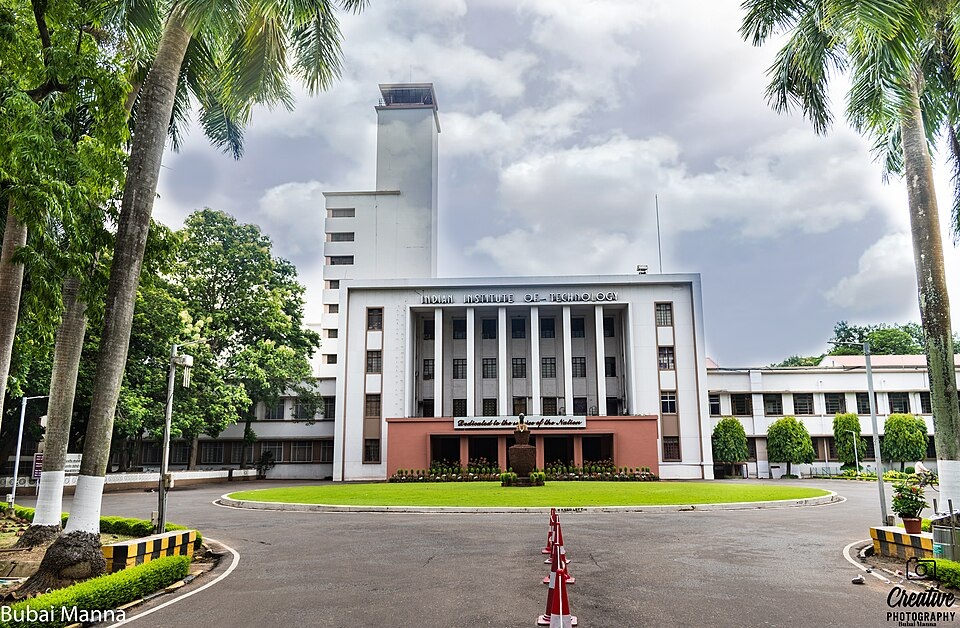

बिहार में सुरक्षाकर्मियों द्वारा रोके जाने पर JDU की उच्चस्तरीय जांच की मांग
वैशाली जिले में निरीक्षण के दौरान स्वास्थ्य मंत्री निशांत कुमार को मुख्यमंत्री सम्राट चौधरी के पास जाने से सुरक्षाकर्मियों ने रोक दिया। इस घटना के बाद JDU ने उच्चस्तरीय जांच की मांग की है।

बिहार के वैशाली जिले में चल रहे एक निरीक्षण के दौरान प्रशासनिक सुरक्षा का एक मामला सामने आया है। एक वीडियो में स्वास्थ्य मंत्री निशांत कुमार को मुख्यमंत्री सम्राट चौधरी के पास जाने का प्रयास करते समय सुरक्षाकर्मियों द्वारा रोके जाने का दृश्य दिखाई दे रहा है।
इस घटना के सामने आने के बाद जनता दल यूनाइटेड (JDU) ने इसे गंभीरता से लेते हुए पूरे मामले की उच्चस्तरीय जांच की मांग की है। हालांकि, प्रशासन की ओर से इस मामले पर अभी तक कोई आधिकारिक बयान जारी नहीं किया गया है।
और पढ़ें
 राष्ट्रीय
राष्ट्रीयवाराणसी के नमो घाट पर 'भजन क्लबिंग' का आयोजन, पीएम मोदी ने की युवाओं के उत्साह की सराहना
वाराणसी के नमो घाट पर चार दिवसीय गंगा महोत्सव के दौरान 'भजन क्लबिंग' का आयोजन किया गया। आधुनिक बीट्स पर पारंपरिक भजनों के इस कार्यक्रम में युवाओं ने भारी उत्साह दिखाया, जिसकी प्रधानमंत्री नरेंद्र मोदी ने सराहना की है।
राष्ट्रीयकानून के पेशे में सफलता का कोई शॉर्टकट नहीं, मेहनत ही सबसे बड़ा मंत्र: अभिषेक मनु सिंघवी
कांग्रेस के वरिष्ठ नेता और वरिष्ठ वकील अभिषेक मनु सिंघवी ने कहा है कि वकालत में सफलता का कोई निश्चित फॉर्मूला नहीं है, लेकिन इसमें 99 प्रतिशत योगदान लगातार मेहनत का होता है।

राष्ट्रीयपीएम मोदी का पश्चिम बंगाल, बिहार और उत्तर प्रदेश का दौरा आज
प्रधानमंत्री नरेंद्र मोदी आज पश्चिम बंगाल, बिहार और उत्तर प्रदेश के दौरे पर हैं। वे आईआईटी खड़गपुर के समारोह में शामिल होने के अलावा विभिन्न विकास परियोजनाओं की सौगात देंगे।
राष्ट्रीयबिहार: बाहुबली विधायक अनंत सिंह ने अपनी बेटी की शादी में दामाद को दिए जेवर और बर्तन
बिहार के मोकामा से विधायक अनंत सिंह ने अपनी बेटी की शादी में दामाद को लग्जरी गाड़ी डिफेंडर, 18 तोला सोने के आभूषण और सोने-चांदी के बर्तन उपहार में दिए हैं।